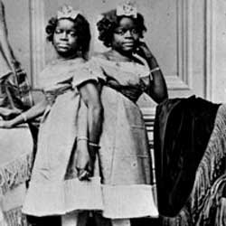

|
| Home|Talent|Cosmetic|Deformity|Abnormal|Ethnological |
Millie-Christine, The Two-Headed NightingaleTwins Millie-Christine McKoy, conjoined at the lower spine, were born into slavery in 1852. Disabled children in slavery conditions were considered worthless burdens, since plantation owners didn't care to feed an extra mouth that couldn't contribute to toiling in the fields. But the rarity of Millie and Christina's conjoined state made them more valuable as a potential sideshow attraction, and as a result, the twins were bought and sold three or more times before they were 6 years old . Eventually, salesman Joseph Pearson Smith bought Millie-Christine and her family, and his wife taught the twins reading, writing, singing and dancing. Touring for nearly 30 years, Millie-Christine's primary performance talent was singing. Nicknamed "The Two-Headed Nightingale," the twins hop-skipped around the United States and Europe, performing atP.T. Barnum's American Museum in New York and even before Queen Victoria. Patrons could pick up a copy of their autobiography, "Biography, Medical Description and Songs of Miss Millie/Christine, the Two-Headed Nightingale" for a quarter at their shows. In 1882, Millie-Christine earned a joint income of $25,000 while touring on the Great Inter-Ocean Railroad Show, paving the way for retirement later that decade [source: Martell]. Black women, or any women at all for that matter, bringing in so much money was a rarity in post-Civil War America, which is one reason they're considered one of the greatest successes in sideshow history. Millie-Christine died in 1912 after Millie, the slightly smaller twin, contracted tuberculosis. |